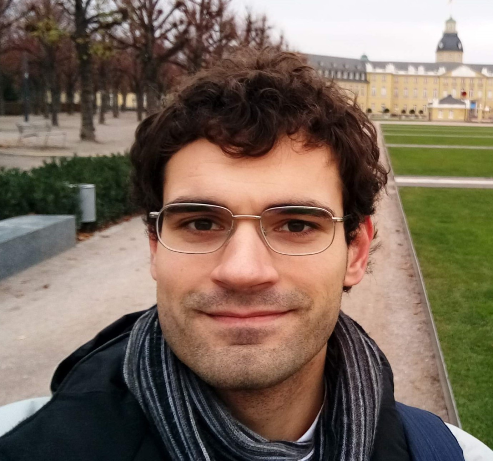

About Me
Born and raised in Tennessee.
I am a year old software developer currently living in Berlin.
I got my BS degree at Middle Tennessee State University in Computer Engineering Technology, with a
Minor in Computer Science.
During my studies I learned how to properly design, develop, and optimize electronic circuits,
computer hardware, software,
networking systems, and embedded computer systems.
After several years of working on more hardware related projects, I became more
interested in the software side of things, specifically in the Virtual Reality Development Field due
to the endless applications of
this technology. Since then I have been spending the majority of my time learning and developing
software.
Programming now fills me with great joy knowing that I have created something special and unique
that can be used for the benefit of
others. Every task I am given gets my full attention to ensure not only till the client/customer is
satisfied, but also that I personally
am satisfied with my own work and accomplishment.